7天一眼扫完
点卡片进当日详情
市区
近郊
购物
返程
10/01周四轻松
希思罗T2 → 希尔顿酒店 → Burberry工厂折扣店 → 大本钟
★ 大本钟日落蓝调
10/02周五6–8km
希尔顿酒店 → 皇家天文台 → 泰晤士河游船 → 塔桥 → 天空花园 Hilton · Royal Observatory · Uber Boat · Tower Bridge · Sky Garden
★ 泰晤士河游船
10/03周六4–6km
希尔顿酒店（Angel区）→ 大英博物馆 → Rock & Sole炸鱼薯条店 Rock&Sole → 尼尔庭院 Neal’s Yard → 意面 Bancone
★ 西区三餐
10/04周日6–8km
国王十字 King's Cross → 剑桥学院区 → 康河撑船 → 返程
★ 康河撑船
10/05周一轻松
退房 → The BoTree酒店寄存 BoTree → Barbour服装店 Carnaby → ALBA午餐 → 哈罗德百货 Harrods
★ Barbour经典夹克 + ALBA工作日午市
10/06周二全日河谷
维多利亚 Victoria → 伊斯特本 Eastbourne → 七姐妹公园河谷入口 → 返伊斯特本
★ 库克米尔河谷白崖
10/07周三轻松
The BoTree酒店 BoTree → 摄政公园 Regent's Park → 取行李 → 希思罗T2
★ 公园慢游后返程
✈️ 往返航班（点开）
去程09/30 TG639 香港→曼谷 19:05–20:45；10/01 TG910 曼谷→希思罗T2 00:30–07:15
回程10/07 ZH888 希思罗T2 22:05 → 深圳 17:10+1
🏨 两家酒店（点开）
前4晚希尔顿酒店（天使站）｜Hilton London Angel Islington｜10/01入·10/05退
后2晚The BoTree酒店（马里波恩）｜The BoTree｜10/05入·10/07退
🚕 3人交通与票务规则（唯一一处）
短步行（≤15分钟直接走）；其余按 9/30 预算与实时 App/ETA 决定，固定票/异常切公共；跨城/船例外。
black cab 区间为 9/30 TfL 计价器预算（fare-card），非报价非固定价，堵车/延误按表上浮；Uber/Bolt 无公开预估，只看 App 实时。
电子票离线：Sky Garden / 大英博物馆 / 剑桥 / Eastbourne 火车票，出发前全部截图存相册+离线地图，三人手机各存一份。
刷卡：每人固定一种支付（全实体卡或全手机），同一程不要实体卡与 Apple Pay 混刷；市内 contactless in/out，长途火车用 e-ticket 扫码。
🗺️ 地图与导航
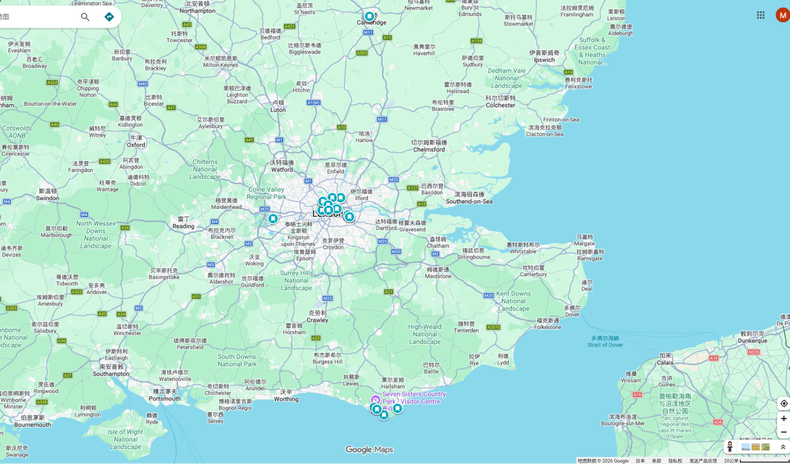
7日范围｜伦敦·剑桥·伊斯特本/七姐妹 London · Cambridge · Eastbourne/Seven Sisters仅示意三大区域，无连线路线
©2026 Google · Google Maps
©2026 Google · Google Maps
每日行程
时间是建议，不是军令
01OCT
抵达伦敦，大本钟日落收尾
希思罗T2 → 希尔顿酒店（Angel区）→ 哈克尼 Hackney → 威斯敏斯特 Westminster
🌤 21/12℃下午转晴🌇 18:40 日落
今天怎么过先看主线，再看地图与细节
抵达伦敦入境取行李，先去酒店
轻早午餐酒店附近，不排队
Burberry折扣店约1.5小时，疲惫就取消
大本钟日落天气好就去，伦敦眼可选
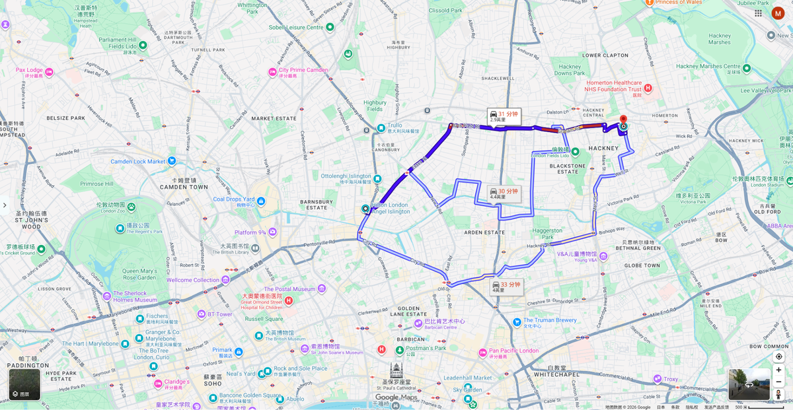
酒店 → Burberry工厂折扣店 Burberry Chatham Place驾车/网约车 约31分钟 · Hilton London Angel Islington → Burberry Outlet 29-53 Chatham Place E9
©2026 Google · Google Maps
©2026 Google · Google Maps
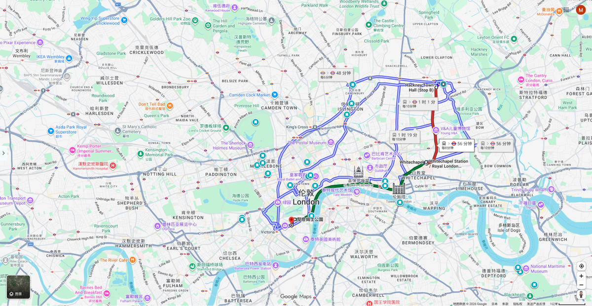
Burberry工厂折扣店 → 威斯敏斯特 Chatham Place → Westminster公共交通 约56分钟 · Burberry Outlet → Westminster / 伦敦眼
©2026 Google · Google Maps
©2026 Google · Google Maps
07:15
抵达希思罗 T2
预留 1.5–2 小时入境取行李；红眼后别硬撑。
推荐🚇 伊丽莎白线｜Elizabeth line → 步行到酒店£46.50 / 3人
展开交通详情：站名、方向、站数、费用与备选
- 1步行到 到达层步行约3分钟到 Heathrow T2&3 站
- 2乘 希思罗T2/T3站 Heathrow Terminals 2&3
- 3伊丽莎白线｜伊丽莎白线东行约35分钟
- 4换乘：法灵顿站出站步行12分钟
- 5出站步行：法灵顿站步行12分钟到酒店
- 6总时长：50–60 分钟 door-to-hotel
£15.50/人 · £46.50/3人（任意时段固定） 刷卡：三人各自同一张contactless，in/out；转公交再上车刷
🚕 出租/网约车（点开）
- 车型行李 3大箱，App内查XL
- 上车点 T2 指定出租点（按指示牌）
- 路况 高（M4早高峰尾段+进城隧道）
仅实时整车≤£60 且 ETA≤15分钟 且 App 确认3人+3箱装得下（否则查XL）才网约车；否则 Elizabeth line。
11:30
酒店附近早餐 / 早午餐
Upper Street 沿线就近咖啡简餐，不排队名店。
13:00
Burberry工厂折扣店｜Burberry Outlet, Chatham Place
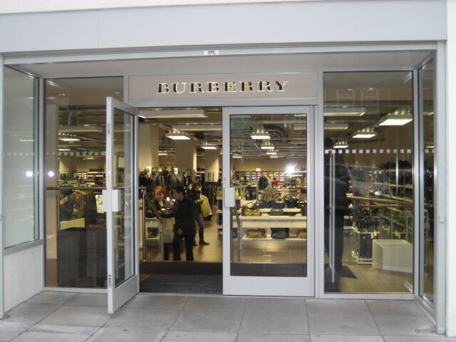
📷 Chatham Place 折扣门店
推荐🚕 网约车（门到门带购物袋）实时App价
展开交通详情：站名、方向、站数、费用与备选
- 起终点 酒店→Burberry工厂折扣店
- 车型行李 普通轿车，购物袋后座
- 上车点 酒店正门路边
- 路况 低–中（midday）
🚇 公共交通（点开）
- 1步行到 酒店步行约5分钟到 Highbury & Islington Overground
- 2乘 海布里及伊斯灵顿站 Highbury & Islington (Overground)
- 3北伦敦线东行2站
- 4出站步行：步行10–15分钟到工厂店
- 5总时长：30–35 分钟
£3.10/人 · £9.30/3人 刷卡：各自同一张contactless，in/out
实时报价>£15 或 ETA>12分钟 → Overground 到 Hackney Central + 步行。
16:00
伦敦眼（天气好且体力好 · 未购票待确认）
条件主计划：确认购票则优先 16:00–16:30 票段；仅当现场顺畅目标 17:00–17:30 乘完。16:45 仍未入队或预计 17:45 前无法结束则不登舱，直接南岸占位。
平日约 11:00–18:00 营业；排队+安检+乘坐预留 1–2 小时，17:00 是排队入场时段、不保证即登舱。
17:20
哈克尼购物区 → 威斯敏斯特（日落机位）
推荐🚇 Overground + 地铁（赶日落机位）£10.80 / 3人
展开交通详情：站名、方向、站数、费用与备选
- 1步行到 步行10分钟回哈克尼中央站
- 2乘 哈克尼中央站
- 3Overground东行到利物浦街站
- 4换乘：Liverpool Street 站内换 tube
- 5出站步行：步行5–10分钟到伦敦眼
- 6总时长：35–45 分钟
£3.60/人 · £10.80/3人（16:30 = peak） 刷卡：同一张contactless连续in/out，一段旅程不换卡
🚕 出租/网约车（点开）
- 车型行李 普通轿车，购物袋放后座
- 上车点 Chatham Place路边
- 路况 高（16:30进城方向）
仅实时 quote ≤£20 且 ETA ≤10分钟 → 网约车抢 17:45 南岸机位；否则 Overground+地铁。
20:00
威斯敏斯特 → 天使站附近晚餐
推荐🚕 夜间网约车 Ride-hailing实时App价
展开交通详情：站名、方向、站数、费用与备选
- 起终点 伦敦眼→希尔顿酒店
- 车型行李 普通轿车
- 上车点 威斯敏斯特路边
- 路况 低（夜间）
🚇 公共交通（点开）
- 1步行到 步行5分钟到威斯敏斯特站
- 2乘 威斯敏斯特站
- 3Jubilee线1站到绿园
- 4换Victoria线4站，再换Northern 1站
- 5换乘：绿园 → 国王十字
- 6出站步行：步行2分钟到酒店
- 7总时长：25–30 分钟
£3.00/人 · £9.00/3人（全Zone1 off-peak） 刷卡：同一张contactless连续in/out，换乘不出站
实时报价>£20 → 换线回天使站。
今日重点：大本钟日落为可选；Outlet、伦敦眼都精神好才走，疲惫直接补觉。
📋 当天准备（展开）
当天补充与备选（票/时间/购物提醒）
门票/订位
- 大本钟外观免费
- 伦敦眼未购票、待确认，需自行在官网购买
交通票
市内交通按全局规则卡；无特殊段。
开放时间
- Burberry Outlet 约 10:00-19:00
- 日落约 18:40
支付/决策
红眼后疲惫就下午补觉，按上面 A/B 分支发车。Outlet 后或去南岸路上顺手夹馅/咖啡即可，不单列 event。
02OCT
格林尼治天文台 · 泰晤士河游船 · 天空花园
希尔顿酒店 → 格林尼治皇家天文台 → 泰晤士河游船 → 伦敦塔桥 → 天空花园 Hilton · Royal Observatory · Uber Boat · Tower Bridge · Sky Garden
☀️ 22/12℃晴好⛴ 甲板风大带防风层
今天怎么过固定票优先
出发去格林尼治地铁＋DLR
皇家天文台子午线与山顶全景
市集午餐留45分钟赶船
泰晤士河游船格林尼治→塔桥
塔桥散步南岸机位
天空花园15:45前到安检
🎫 已购票天空花园｜Sky Garden 16:15 入场｜15:45 前到安检塔桥→天空花园步行 10–12 分钟保底，不打车。
打开今日路线酒店 → 卡蒂萨克号 → 天文台 → 塔桥 → 天空花园 → 回酒店›
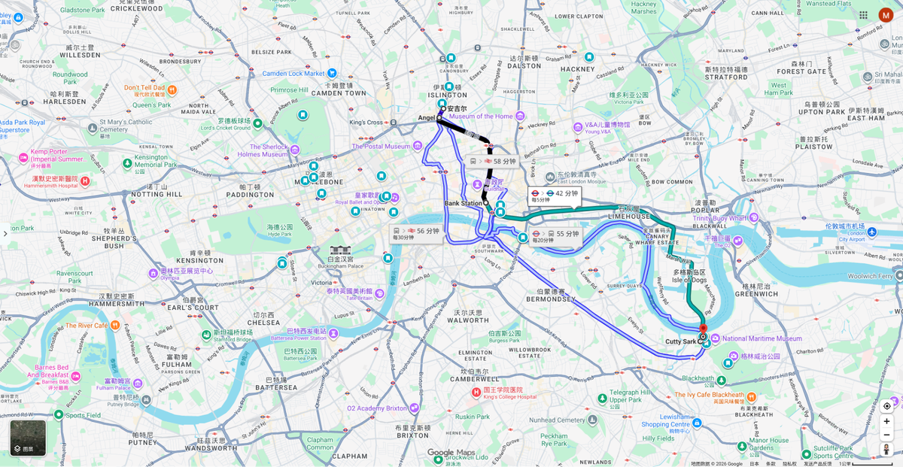
天使站 → 卡蒂萨克号帆船 Angel → Cutty Sark地铁 约42分钟 · Angel → Cutty Sark Greenwich
©2026 Google · Google Maps
©2026 Google · Google Maps
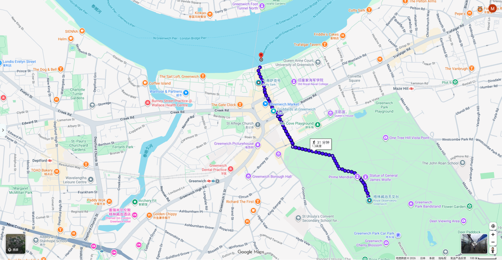
格林尼治镇内步行步行 约31分钟 · Greenwich Pier → 卡蒂萨克 → 皇家天文台
©2026 Google · Google Maps
©2026 Google · Google Maps
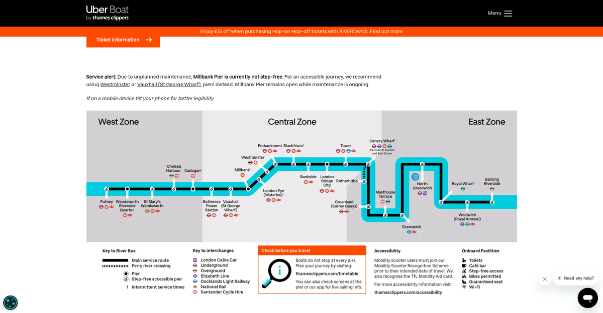
优步河船官方航线图 Uber Boat by Thames Clippers河船 · Thames Clippers · Tower ↔ Greenwich/North Greenwich 全线
Uber Boat by Thames Clippers 官方航线图 · thamesclippers.com
Uber Boat by Thames Clippers 官方航线图 · thamesclippers.com
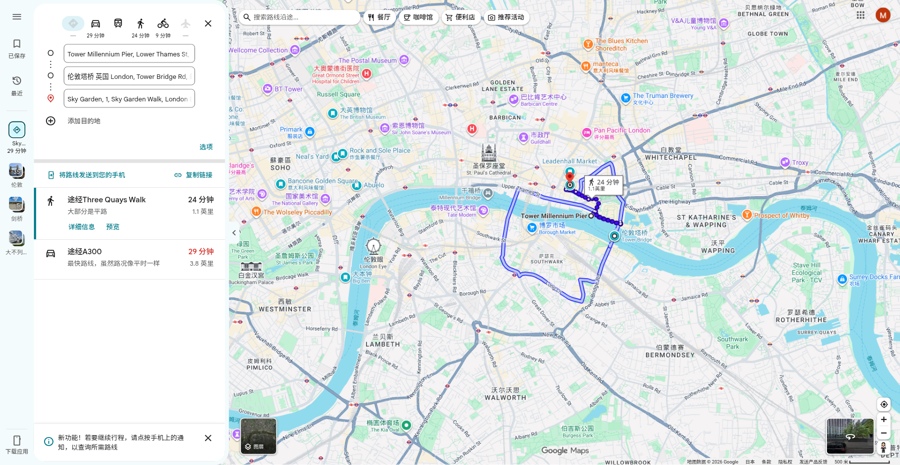
伦敦塔桥 → 天空花园 Tower Bridge · Sky Garden步行约24分钟 · Tower Pier → 塔桥 → Sky Garden；15:45前到安检。
©2026 Google · Google Maps
©2026 Google · Google Maps
08:30
天使站至卡蒂萨克号帆船 Angel → Cutty Sark
推荐🚇 Northern City 支线 + DLR£10.80 / 3人
展开交通详情：站名、方向、站数、费用与备选
- 1步行到 酒店步行约2分钟到 Angel 地铁站
- 2乘 天使站 Angel (Northern City branch)
- 3Northern City 南行3站到Bank，换DLR到Cutty Sark
- 4换乘：Bank 站换DLR
- 5出站步行：步行2–3分钟到河边
- 6总时长：30–38 分钟
£3.60/人 · £10.80/3人（Zones1-2 peak，Cutty Sark=Zone2） 刷卡：同一张contactless连续in/out，Bank换乘不换卡
🚕 出租/网约车（点开）
- 车型行李 普通轿车
- 上车点 酒店正门路边
- 路况 高
Northern/DLR 严重延误、带行李或下雨 → 提前10分钟约网约车并确认实时报价。
09:30卡蒂萨克外观 · 格林尼治市集参考
逛 Greenwich Market、岸边看卡蒂萨克外观（不购票入内），步行上山赶 10:30 天文台。
12:30格林尼治市集午餐用餐
下山在 Market 内就近简餐，留约 45 分钟赶船。
13:30
优步河船到塔桥码头（体验主选）
推荐⛴ 优步河船｜Uber Boat（体验主选）上下船各刷
展开交通详情：站名、方向、站数、费用与备选
- 1步行到格林尼治码头 Greenwich Pier
- 2三人各自用本人同一张银行卡/手机刷入
- 3乘优步河船 RB1 西行往塔桥方向
- 4到塔桥码头 Tower Pier touch out 下船
- 5班次：约15–20分钟一班，航程23分钟
- 6总时长：约23分钟航程 + 上下船步行
按 Thames Clippers 官网当日票 ×3（App/Oyster 通常比码头现场便宜） 刷卡：三人各自同一张contactless，上船闸机touch in、下船touch out；船费单独计，不并入地铁/公交封顶
🚕 出租/网约车（点开）
- 车型行李 不建议
- 上车点 不适用
- 路况 中–高（南岸陆路）
雨大不适船 → DLR/Central line 备选（day-notes 已记）。
16:15天空花园 Sky Garden参考
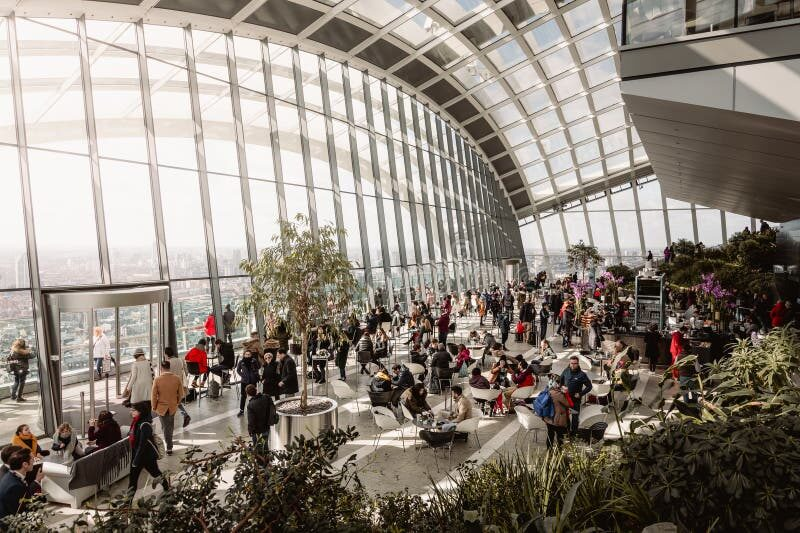
📷 Sky Garden 中庭示意
参观约 1 小时。
17:30
天空花园附近晚餐 / 返酒店
参观结束后在利德贺市场、Bank或Monument沿线就近简餐；Barbour已固定到10月5日，不在今天赶关门。
推荐🚇 Northern City 支线直达 direct£9.30 / 3人
展开交通详情：站名、方向、站数、费用与备选
- 1步行到 利德贺市场步行约3分钟到银行站
- 2乘 银行站 Bank (Northern City branch)
- 3Northern City 支线北行，3 站直达 Angel
- 4出站步行：步行2分钟到酒店
- 5总时长：10–14 分钟（3站+候车）
£3.10/人 · £9.30/3人（18:30 = peak） 刷卡：同一张contactless in/out（直达无换乘）
🚕 出租/网约车（点开）
- 车型行李 普通轿车，短段无大件行李
- 上车点 Bank路边
- 路况 中–高
Northern City 支线停运 → bus 43/141/21 或 black cab £12–15。
今日重点：上午东南伦敦，坐船回塔桥接上16:15固定票；天空花园后就近晚餐返酒店，不再赶购物店。
📋 当天准备（展开）
当天补充与备选（票/时间/购物提醒）
门票/订位
- Sky Garden 16:15，15:45 前到安检
- 天文台建议官网定时票；卡蒂萨克仅外观
交通票
- Greenwich→Tower 选 Uber Boat，不计地铁封顶
- 其余 TfL contactless 拍卡
开放时间
- 天文台约 10:00-17:00
- Sky Garden 已订 16:15
支付/决策
游船是本日重点；甲板风大穿防风层。08:30 出发前在 Hilton London Angel Islington 前台/Upper St 顺路解决早餐。
🛍️ 购物备选与执行提醒
- Jarrow 工厂店：Jarrow NE32 3HL，单程约 3h27 火车+接驳，不顺路、本次未安排；往返时间车费可能抵消差价。
- Bicester Village：另占半天/一天，不推荐本次。
- VAT 退税：Great Britain 游客购物目前无 VAT 退税，按含税价决策。
03OCT
大英博物馆与西区
大英博物馆 → 西区 Bloomsbury · Covent Garden · Soho
⛅ 22/11℃多云干燥🚶 西区步行日
今天怎么过一馆三餐，全部顺路
大英博物馆09:30到，精选看2.5小时
炸鱼薯条午餐Rock & Sole
尼尔庭院彩色庭院拍照
Abuelo小食共享吐司，排队久就跳过
Bancone晚餐丝绸手帕面
🎫 已预约大英博物馆 10:00 入场｜09:30 前到正门安检上午先到馆，Abuelo 移到午后或取消。
打开今日路线酒店 → 大英博物馆 → Rock & Sole炸鱼薯条店 → 尼尔庭院 → Bancone意面›
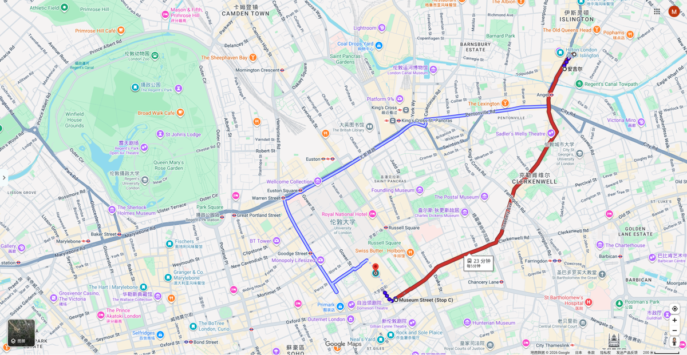
天使站 → 大英博物馆（38路）Angel → British Museum公交38路 约23分钟 · Angel → British Museum
©2026 Google · Google Maps
©2026 Google · Google Maps
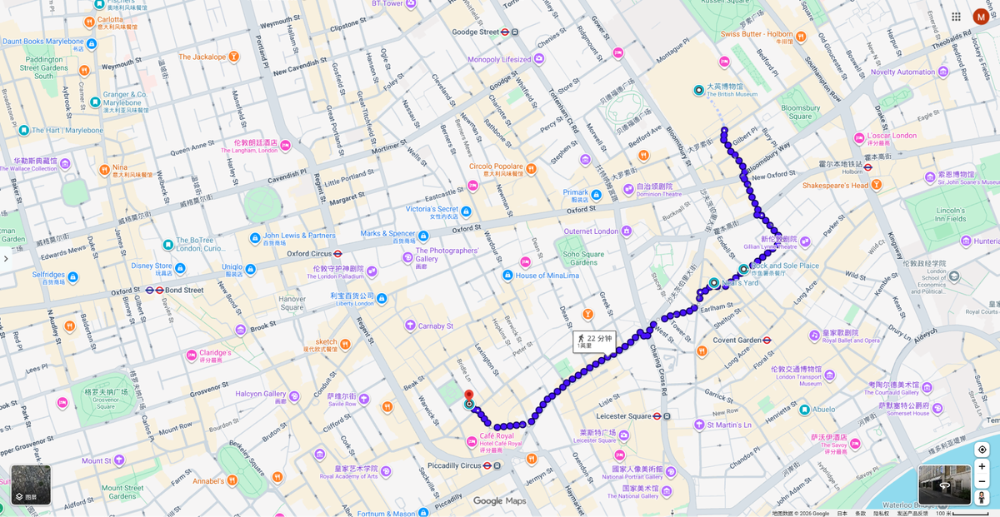
大英博物馆 → 四店 → Bancone意面餐厅 Bancone步行 约22分钟 · BM → Rock&Sole → Neal's Yard → Bancone
©2026 Google · Google Maps
©2026 Google · Google Maps
09:00
酒店 / 沿途轻早餐
Upper Street 沿线就近咖啡简餐；上午不固定 Abuelo。
09:15
天使站 → 大英博物馆
推荐🚌 38 路公交直达£5.25 / 3人
展开交通详情：站名、方向、站数、费用与备选
- 1步行到 酒店步行约1分钟到 Angel Station 公交站
- 2乘 天使站公交站 Angel Station bus stop
- 338路往Victoria，到Museum Street车程
- 4出站步行：下车步行2分钟到正门
- 5总时长：18–22 分钟
£1.75/人 · £5.25/3人（公交统一价，日封顶£5.25/人） 刷卡：上车touch in、不刷下车；各自同一张contactless
🚕 出租/网约车（点开）
- 车型行李 普通轿车，短段无大件行李
- 上车点 酒店门口路边
- 路况 中（高峰尾段）
09:00 时 38路 出发屏仍>8分钟晚点 → Islington High St 打 black cab（£10–16，9–12分钟）保 09:30。
09:30
到大英博物馆正门安检
09:30 前到、10:00 入场；带护照与电子预约码。
10:00
大英博物馆精选
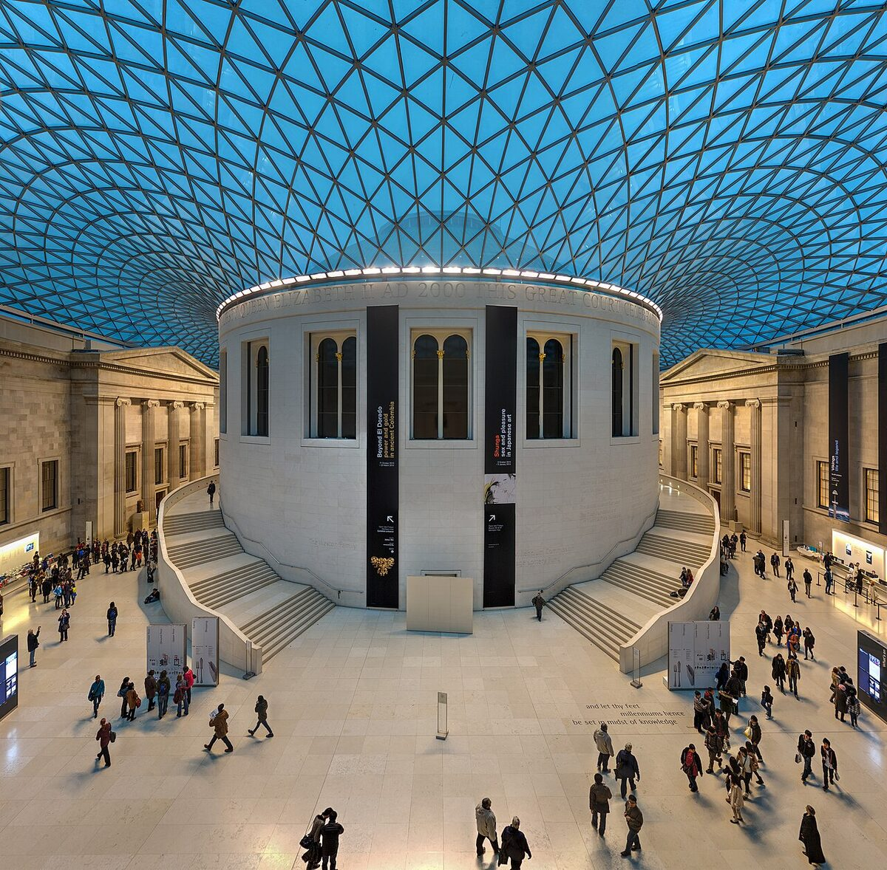
📷 Diliff via Wikimedia Commons · CC BY-SA 3.0
建议顺序：大中庭 → 罗塞塔石碑/埃及 → 亚述浮雕 → 帕特农雕塑 → 木乃伊；约 2.5 小时，12:30 前后离馆。
13:15
午餐 · Rock & Sole炸鱼薯条店
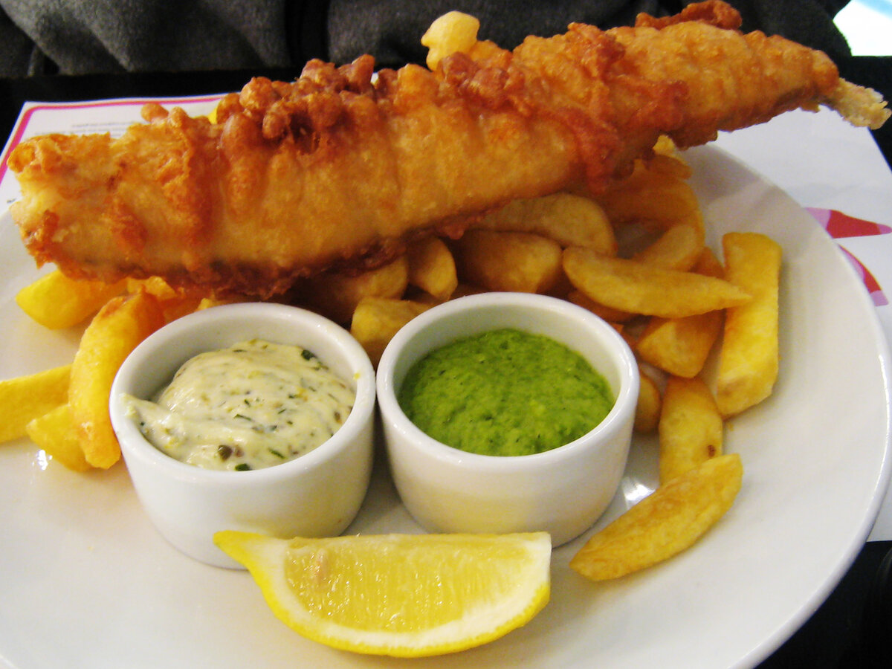
📷 Charles Haynes via Wikimedia Commons · CC BY-SA 2.0
1871 年伦敦最古老的炸鱼薯条店。人均约 £22–26，walk-in 为主、留约 60 分钟。从博物馆步行约 10 分钟到 47 Endell St；博物馆超时则午餐顺延。
15:15
Abuelo咖啡小食（午后顺路 · 可选）
从尼尔庭院步行约10分钟。前面已吃炸鱼薯条、后面还要吃Bancone，这里只作为咖啡加共享小食，不再吃完整早午餐；排队超过15分钟就跳过。
17:30
晚餐 · 班科内手工意面 Bancone
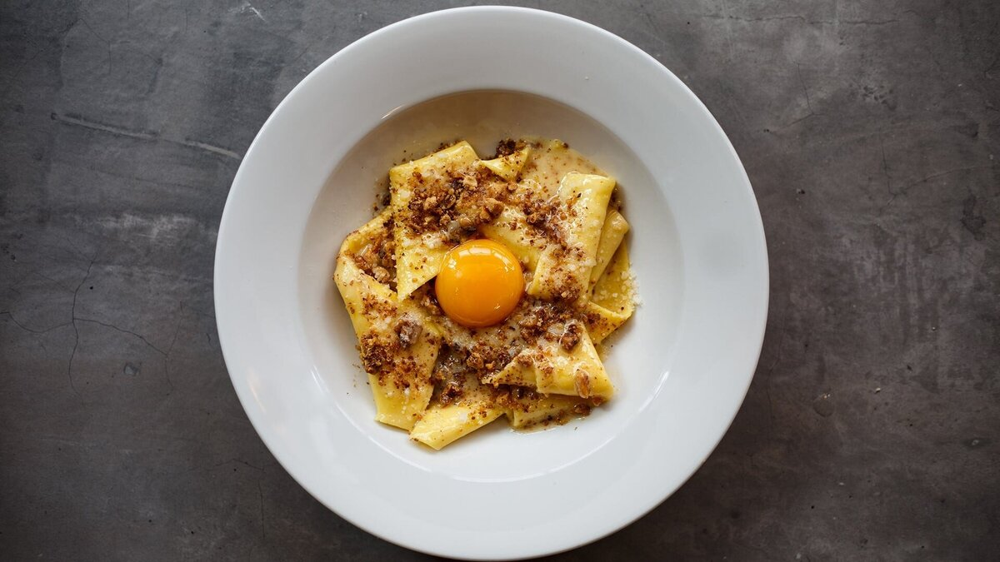
📷 Bancone 招牌菜实拍
人均约 £32–38，可 walk-in 等位也可官网订桌，周六营业到 22:30，cashless。从 Seven Dials 步行约 10-15 分钟到 8-10 Lower James St。
19:30
回天使站酒店
推荐🚌 38 路公交直达£5.25 / 3人
展开交通详情：站名、方向、站数、费用与备选
- 1步行到 步行5分钟到Piccadilly Circus站
- 2乘 皮卡迪利 Circus 站 Piccadilly Circus (Stop B)
- 338路往Clapton Pond方向 Angel（站数按车内屏）
- 4出站步行：下车步行1分钟到酒店
- 5总时长：22–28 分钟
£1.75/人 · £5.25/3人 刷卡：上车touch in、不刷下车；各自同一张contactless
🚕 出租/网约车（点开）
- 车型行李 普通轿车
- 上车点 Soho路边
- 路况 高
38路 晚点/拥挤 → 步行8分钟到 Tottenham Court Rd 乘 Central→Bank 换 Northern City 回 Angel。
今日重点：10:00 博物馆预约；西区景点间 ≤15 分钟步行全保留。
📋 当天准备（展开）
当天补充与备选（票/时间/购物提醒）
门票/证件
- 大英博物馆 10:00 入场，09:30 前到正门
- 带护照原件与电子预约码
交通票
38路公交统一票价；其余按全局规则卡。
开放时间
- 大英博物馆周六 10:00-17:00
- Rock & Sole 约 12:00 开门
- Bancone cashless
支付/决策
Bancone cashless；午餐与博物馆离馆衔接，超时顺延。
04OCT
剑桥：学院与康河
国王十字区当天往返 King's Cross round-trip
🌦 20/13℃阵雨·阵风25mph🌂 带防风防水
今天怎么过火车时间锁定
火车去剑桥国王十字发车
学院区慢走经典建筑与街景
学院区便餐不追网红店
国王学院先查当天开放
康河撑船风雨不适就取消
返伦敦按电子票进站
🚆 已购车票去程 国王十字车站 10:24 → Cambridge｜回程约 19:40（以电子票为准）往返已购；09:30 前到国王十字车站候车。
打开今日路线国王十字车站 10:24 → 剑桥学院区午餐慢走 → 康河撑船 → 19:40 返程›
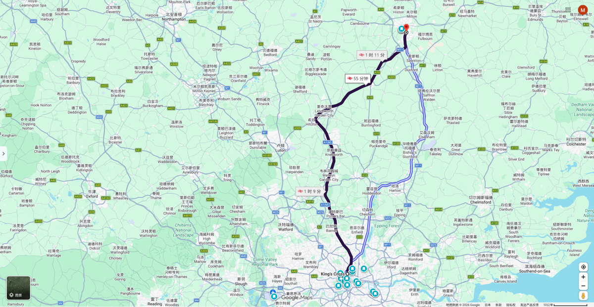
伦敦国王十字 → 剑桥（火车）London King's Cross → CambridgeGreat Northern 约55分钟 · King's Cross → Cambridge
©2026 Google · Google Maps
©2026 Google · Google Maps
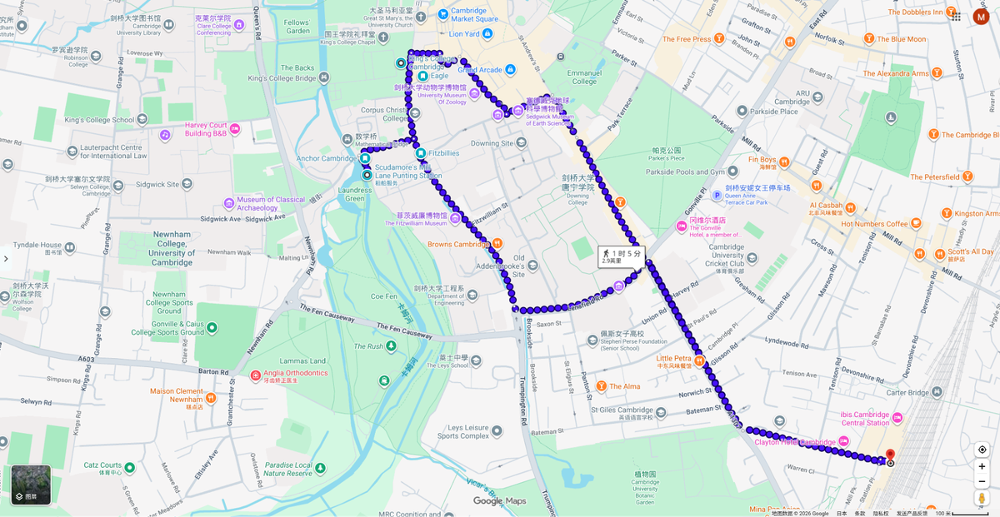
剑桥站 → 学院 → 撑船 → 站步行环线 约1小时5分 · Cambridge站 → King's College → Scudamore's Mill Lane → 站
©2026 Google · Google Maps
©2026 Google · Google Maps
09:00
酒店早餐（不必赶早）
回程约 19:40、时间充裕；慢慢吃早餐。
09:15
天使站 → 国王十字车站
推荐🚇 Northern City 支线 1 站£9.30 / 3人
展开交通详情：站名、方向、站数、费用与备选
- 1步行到 酒店步行约2分钟到 Angel 站
- 2乘 天使站 Angel (Northern City branch)
- 3Northern City北行1站到国王十字车站
- 4换乘：出站走到St Pancras乘火车
- 5出站步行：按指示牌到火车站台
- 6总时长：约4分钟车程 + 步行换乘
£3.10/人 · £9.30/3人（09:15 = peak） 刷卡：市内段同一张contactless in/out；长途火车用预订e-ticket扫码
🚕 出租/网约车（点开）
- 车型行李 不推荐
- 上车点 不适用
- 路况 低
到后
学院区慢走
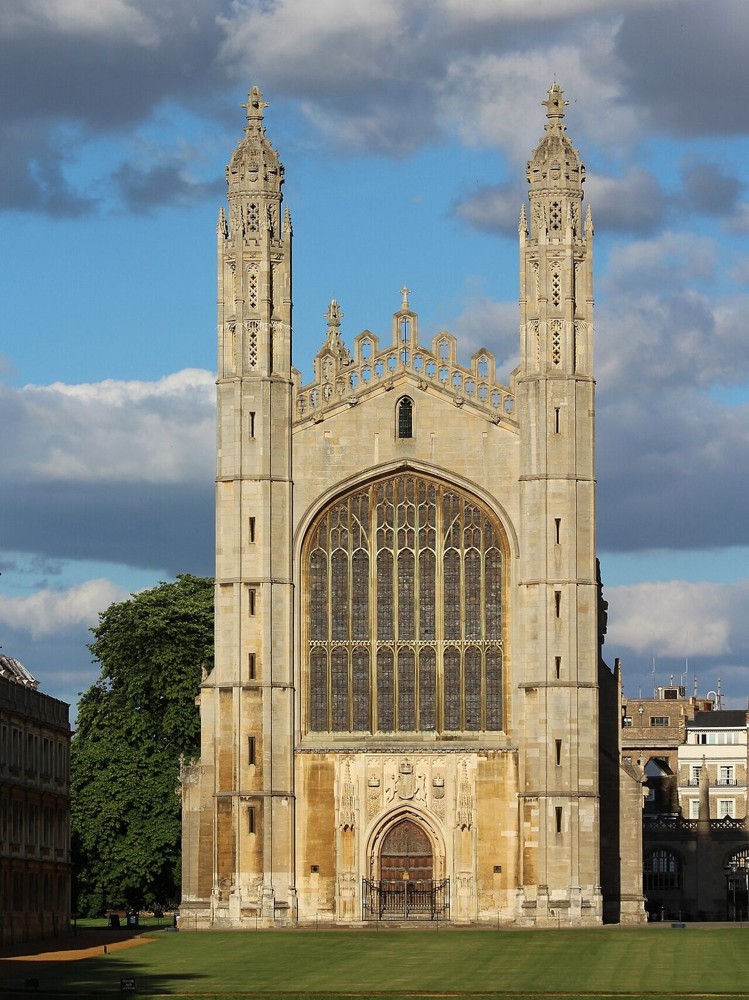
📷 Martinvl via Wikimedia Commons · CC BY-SA 4.0
剑桥站出站顺路慢走到 King's Parade。
13:00
学院区午餐 / 咖啡
King's Parade 附近就近便餐与咖啡，不指定名店。
15:45
康河带讲解撑船（午后）
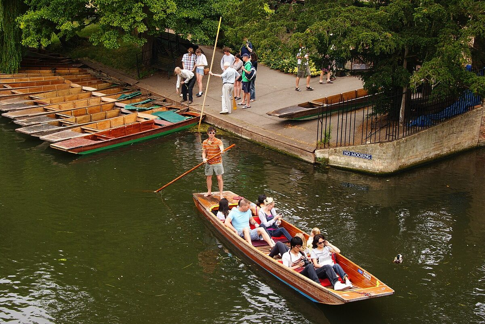
📷 Peter Trimming via Wikimedia Commons · CC BY-SA 2.0
拼船带讲解约 £20–35/人，讲解会讲叹息桥、数学桥与徐志摩；约 45-50 分钟，认准 Scudamore's（Mill Lane 或 Quayside 正规码头），别在 King's Parade 跟街头拉客砍价。现场雨/风不适则取消。
17:00
剑桥晚午餐/早茶（普通便餐）
撑船约16:35结束，到19:10回站约2.5小时空档；King's Parade 附近随便找一家普通便餐/早茶填肚子，不排队名店，不命名。
19:10
回 Cambridge 站候车
目标 19:10 左右到站；回程已购票，精确时刻以电子票为准。
19:40
剑桥返伦敦 Cambridge → London
到达 King's Cross 后就近便餐回 Angel；不安排名店晚餐。
今日重点：去程 10:24 锁定；撑船遇雨/风现场取消，改博物馆/学院外观。
📋 当天准备（展开）
当天补充与备选（票/时间/购物提醒）
车票/证件
- 国王十字→剑桥已购：去 10:24 / 回约 19:40
- 每人一票，不套 TfL 封顶
交通票
- 火车在 TfL 区外，出示电子票
- 天使站↔国王十字这段拍卡
开放时间
- King's College 出发前查官网日历
- 撑船选 Scudamore's（Mill Lane）
支付/决策
阵雨+阵风 25mph：带防风防水；雨/风不适取消撑船。周日 Cambridge 线工程概率高，出发前一天按 checklist 核 National Rail 当日时刻。
05OCT
换酒店 · Barbour服装店 · ALBA午餐 · 哈罗德百货
希尔顿酒店（Angel区）→ The BoTree酒店（马里波恩）→ 卡纳比街 Carnaby Street → 骑士桥区 Knightsbridge
🌤 21/13℃干燥🧳 转场日
今天怎么过购物＋午餐，不走回头路
换酒店寄存The BoTree
Barbour独立店试Bedale / Beaufort / Ashby
ALBA午餐午市＋开心果提拉米苏
Harrods过街即到，逛2–3小时
返回酒店公交或实时价打车
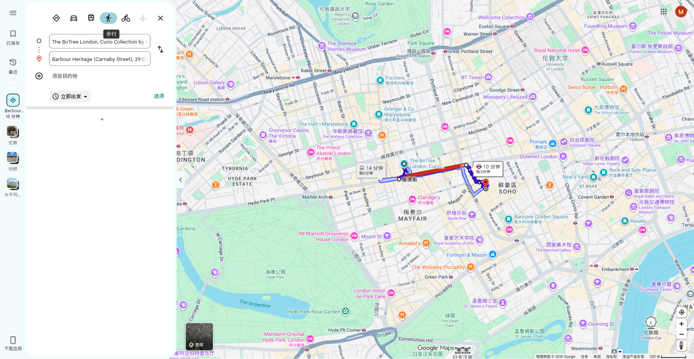
The BoTree酒店 → Barbour卡纳比街店 The BoTree → Barbour Carnaby步行约13–15分钟，寄存行李后直接向东走到卡纳比街。
©2026 Google · Google Maps
©2026 Google · Google Maps
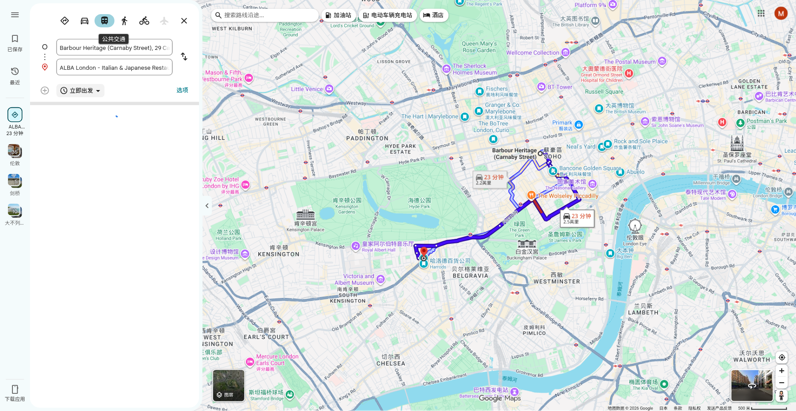
Barbour卡纳比街店 → ALBA午餐 Carnaby → KnightsbridgePiccadilly Circus乘Piccadilly line西行3站，约23分钟；ALBA与Harrods隔街相对。
©2026 Google · Google Maps
©2026 Google · Google Maps
10:00
退房 → The BoTree酒店（带行李）
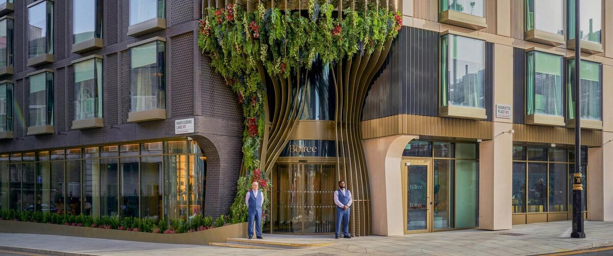
📷 The BoTree 外观 · Marylebone Lane 鹅卵石巷
推荐🚇 Northern City → Moorgate → Elizabeth line£9.00 / 3人
展开交通详情：站名、方向、站数、费用与备选
- 1酒店步行到天使站 Angel
- 2Northern City支线南行2站到Moorgate（途经Old Street）
- 3站内步行换乘利物浦街站 Elizabeth line
- 4Elizabeth line西行3站到Bond Street
- 5出站步行2分钟到The BoTree酒店
- 6总时长约25–30分钟
£3.00/人 · £9.00/3人（全Zone1 off-peak） 刷卡：同一人同一设备进出；否则Northern到Moorgate/利物浦街换Elizabeth line
🚕 出租/网约车（点开）
- 车型行李 带行李，App内查XL
- 上车点 酒店正门路边
- 路况 低–中（10:00 off-peak）
仅实时整车≤£25 且 ETA≤10分钟 且 App 确认3人+行李装得下（否则查XL）→ 网约车；否则国王十字换Elizabeth line。
10:45
Barbour卡纳比街店｜Barbour Heritage, Carnaby Street
寄存行李后从 The BoTree 步行约15–20分钟到 29 Carnaby Street；独立店比百货专柜更适合集中试穿，周一约10:00–19:00营业，预留45–60分钟。
11:45
卡纳比街 → ALBA意大利餐厅
推荐🚇 Piccadilly line 直达约£9 / 3人
展开交通详情：站名、方向、站数、费用与备选
- 1Barbour步行约5分钟到皮卡迪利圆环站 Piccadilly Circus
- 2乘Piccadilly line西行，方向看 Heathrow / Uxbridge
- 3坐3站：Green Park → Hyde Park Corner → Knightsbridge
- 4骑士桥站 Knightsbridge 从Brompton Road方向出站
- 5出站步行约3–5分钟到ALBA，70 Brompton Road一层
- 6总时长约20–25分钟
每人使用自己的contactless，进站touch in、出站touch out；同一人全程不要换卡或手机。
🚕 出租/网约车（点开）
- 上车点 Carnaby Street外围可停车路段
- 路况 中，中心区绕行较多
- 选择 App显示门到门明显快于地铁时再打车
12:30
午餐 · ALBA工作日午市 + 开心果提拉米苏
周一午市12:00–16:00；建议订12:30，留约75–90分钟。你要吃的开心果提拉米苏当天先向服务员确认，避免只点套餐却错过甜品。
14:00
哈罗德百货｜Harrods
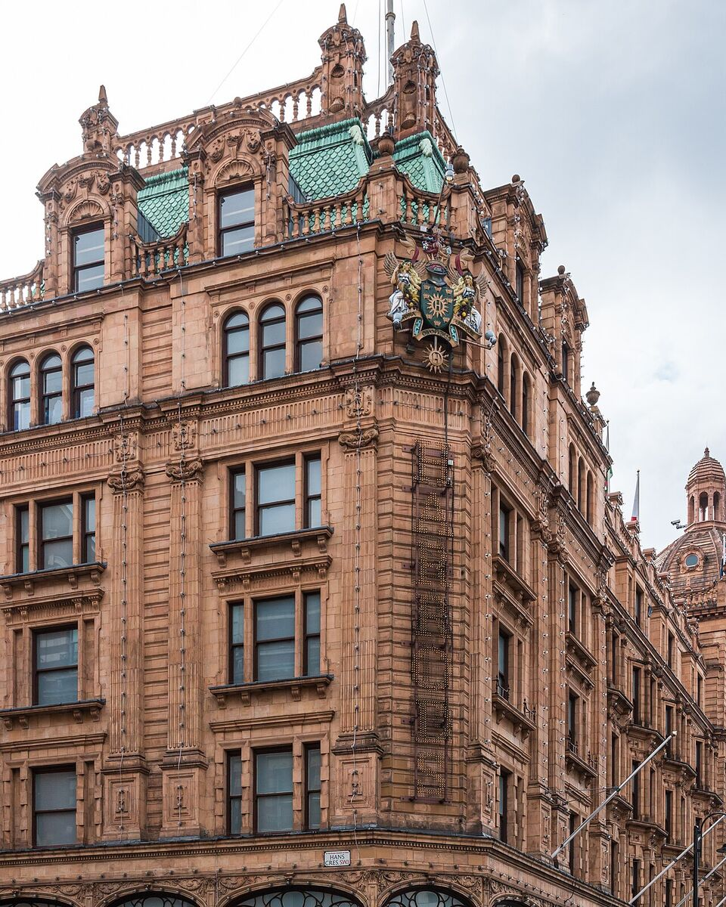
📷 Dietmar Rabich via Wikimedia Commons · CC BY-SA 4.0
ALBA正对面，不需要再坐车。主线先逛Harrods特色楼层；若卡纳比街店缺尺码，再到Barbour专柜补看，但不要重复试相同款。
17:15
骑士桥区 → The BoTree酒店
推荐🚌 13 / 74 路公交返程£5.25 / 3人
展开交通详情：站名、方向、站数、费用与备选
- 1步行到 步行3分钟到Knightsbridge站
- 2乘 骑士桥站 Knightsbridge bus stop
- 3公交13/74路到Old Bond St
- 4出站步行：步行5分钟到酒店
- 5总时长：25–30 分钟
£1.75/人 · £5.25/3人 刷卡：上车touch in、不刷下车；各自同一张contactless
🚕 出租/网约车（点开）
- 车型行李 普通轿车，购物袋后座
- 上车点 骑士桥路边
- 路况 高
13/74 预计5分钟内到站 → 公交；久等/购物袋重且 App 报价≤£13 → 网约车；否则公交。
今日重点：寄存行李后先到卡纳比街独立店试穿 Barbour；12:30 吃 ALBA 工作日午市与开心果提拉米苏，饭后过街逛 Harrods，购物结束再返酒店。
📋 当天准备（展开）
当天补充与备选（票/时间/购物提醒）
门票/订位
- ALBA 建议预订 12:30 午餐
- 工作日午市 12:00–16:00：两道£32 / 三道£39，开心果提拉米苏是否包含以当天菜单为准
交通票
卡纳比街→骑士桥乘 Piccadilly line；每人自己的contactless进出站。Harrods结束后13/74路公交或按实时价格打车。
开放时间
- Barbour Carnaby 周一约 10:00–19:00
- ALBA 周一 12:00–23:30，午市至16:00
- Harrods 周一约 10:00–20:00
- The BoTree 约 15:00 后入住
购物决策
卡纳比街店先试经典款和尺码；若缺货，Harrods男装Barbour专柜只补看缺失款，不重复逛。退房前先吃早餐。
06OCT
库克米尔河谷往返
维多利亚 Victoria → 伊斯特本 Eastbourne → 七姐妹公园河谷入口
🌦 17–20℃雨10–20%🌊 沿海阵风晚再确认
今天怎么过只走河谷平地，不登崖顶
去维多利亚站赶09:46火车
火车去Eastbourne11:51到，换乘1次
12路公交去七姐妹公园入口
库克米尔河谷平地往返，白崖远景
公交返Eastbourne留足晚餐与候车
直达伦敦21:05到Victoria
🚆 已购车票去 Victoria 09:46 → Eastbourne 11:51（1 换）｜回 19:33 → Victoria 21:05（直达）换乘站打开电子票 View stops 现场确认；Sep 9–Oct 12 时刻变更，出发前再核。
打开今日路线酒店 → 维多利亚车站 09:46 → 伊斯特本 → 七姐妹公园河谷入口 → 19:33 回›
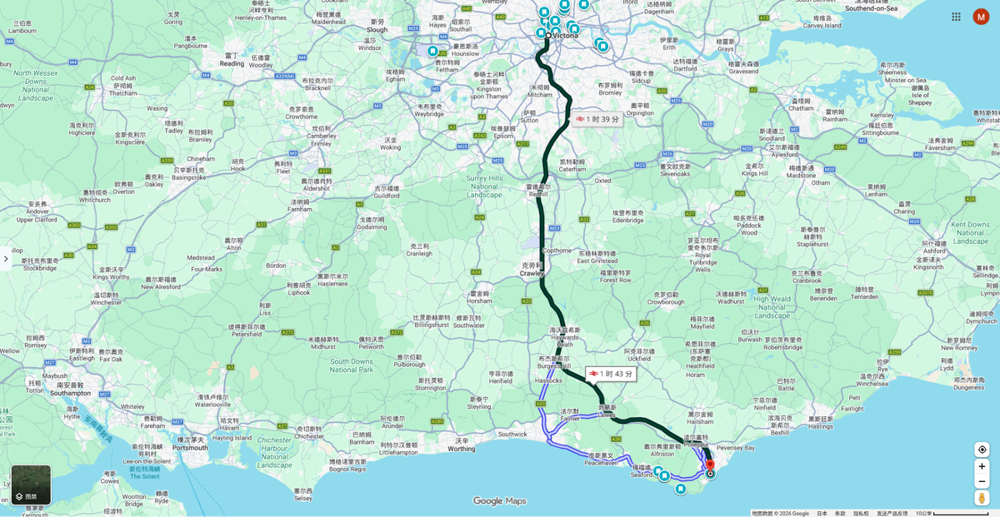
维多利亚 → 伊斯特本（火车）Victoria → EastbourneSouthern 约1小时43分 · London Victoria → Eastbourne
©2026 Google · Google Maps
©2026 Google · Google Maps
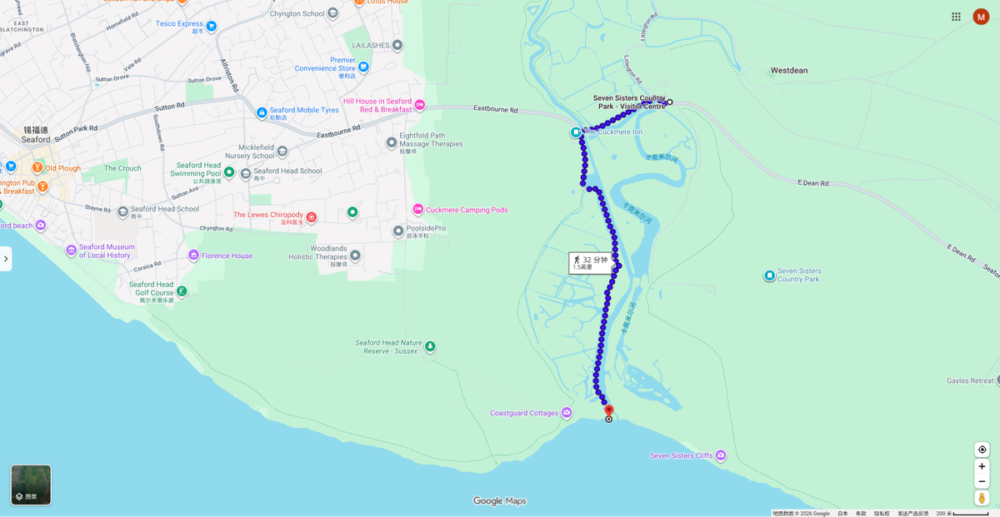
七姐妹公园河谷入口 → 库克米尔河口 Exceat → Cuckmere Haven河谷步行 约32分钟（1.5mi） · 河谷入口 → 库克米尔河口
©2026 Google · Google Maps
©2026 Google · Google Maps
🚌 12路｜伊斯特本 ↔ 河谷入口
上车前打开 B&H 官网确认当天时刻；认准车头“12”和 七姐妹公园河谷入口站牌。B&H 12路官网 · Google 地点
08:30
The BoTree酒店 → 维多利亚车站
推荐🚕 网约车/黑色出租车（赶 09:46 火车）TfL预算 £13–20
展开交通详情：站名、方向、站数、费用与备选
- 起终点 酒店→维多利亚站
- 车型行李 带行李赶火车，App内查XL
- 上车点 BoTree正门
- 路况 高
🚇 公共交通（点开）
- 1步行到 BoTree 步行约4分钟到 Bond Street 站
- 2乘 邦德街站 Bond Street (Jubilee line)
- 3Jubilee线1站→Victoria线1站
- 4换乘：Green Park换Victoria线
- 5出站步行：走到National Rail站台
- 6总时长：18–22 分钟
£3.10/人 · £9.30/3人（仅 fallback） 刷卡：市内段contactless in/out；长途火车用e-ticket扫码
08:30 App ETA 到站>08:55、报价>阈值 或 5分钟内无车 → Bond St Jubilee→Green Park→Victoria line；不追 surge 误火车。
12:15
Eastbourne 出站 → 12 路
预留出站、找到 Brighton&Hove 12 路站台时间。
12:45
12路 → 七姐妹公园河谷入口
推荐🚌 B&H 12路 Brighton&HoveTap On/Off 各刷
展开交通详情：站名、方向、站数、费用与备选
- 1步行到 Eastbourne Station 步行到站前公交站
- 2乘 伊斯特本站公交站 Eastbourne Station bus stop
- 3B&H 12路西行到河谷入口下车
- 4出站步行：走到库克米尔河谷
- 5总时长：35–45 分钟
B&H Tap On Tap Off，三人各自支付；可考虑 NetworkSaver 日票（约£7.50车上/£7.30 App）覆盖12路随上随下；总额以运营商当日封顶为准 刷卡：上车touch in、下车touch out；各自同一张卡，B&H 独立日封顶，不与 TfL 卡混算
🚕 出租/网约车（点开）
- 车型行李 不推荐
- 上车点 不适用
- 路况 中
13:30
库克米尔河谷平地往返
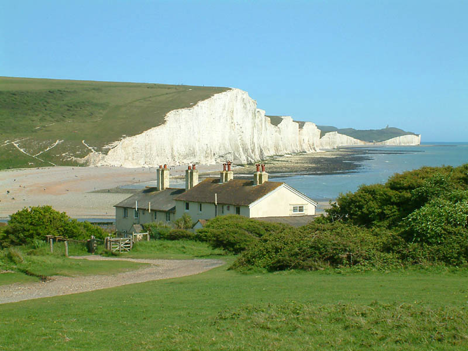
📷 StephenDawson via Wikimedia Commons · CC BY-SA 2.0
从 七姐妹公园河谷入口沿库克米尔河口平地往返，地势平缓、远拍白崖；不涉水、不上海崖边缘。防风防水防滑，服从现场封闭。
午餐：入口旁 Cuckmere Inn 河畔 pub 有热食、十月壁炉已生火（普通便餐，不指定名店）；Visitor Centre Cafe 只有三明治蛋糕。
16:45
12路返回伊斯特本
推荐🚌 12 路公交返程Tap On/Off 各刷
展开交通详情：站名、方向、站数、费用与备选
- 1步行到 步行回七姐妹公园河谷入口公交站
- 2乘 七姐妹公园河谷入口公交站
- 3B&H 12路东行往伊斯特本
- 4出站步行：走到火车站台
- 5总时长：35–45分钟
B&H Tap On Tap Off，三人各自支付；总额以运营商当日封顶为准 刷卡：上车touch in、下车touch out；到 Eastbourne 后乘火车用 e-ticket 扫码
🚕 出租/网约车（点开）
- 车型行李 不推荐
- 上车点 不适用
- 路况 中
21:05
维多利亚车站 → The BoTree酒店
推荐🚕 网约车/黑色出租车（夜间门到酒店）TfL预算 £13–20
展开交通详情：站名、方向、站数、费用与备选
- 起终点 维多利亚→酒店
- 车型行李 普通轿车
- 上车点 维多利亚站出租点
- 路况 低
🚇 公共交通（点开）
- 1步行到 步行到Victoria line站台
- 2乘 维多利亚站 Victoria (Victoria line)
- 3Victoria line北行2站
- 4出站步行：步行6分钟到酒店
- 5总时长：15–18 分钟
£3.00/人 · £9.00/3人（Zone1 off-peak，2026新费率） 刷卡：同一张contactless in/out；末班约00:35
App surge>1.5x 或 Victoria 5分钟内无车 → 有遮罩 black cab 排队；地铁备份至约00:20。
今日重点：只走 Cuckmere 河谷平地往返，不涉水、远离崖缘；固定火车优先到站。
📋 当天准备（展开）
当天补充与备选（票/时间/购物提醒）
车票/换乘
- 去 09:46→11:51（1 换）/ 回 19:33→21:05（直达）
- 换乘站现场核 View stops，不猜
时刻变更
- Sep 9–Oct 12 Ore/Eastbourne 时刻变更
- 只乘 12 路（不乘 12A）
天气
- 17–20℃，降雨 10–20%
- 沿海阵风 10/05 晚再确认
装备/安全
防风防水外套、防滑鞋；不涉水、远离崖脚，服从现场封闭。
就餐节奏
BoTree/Victoria 站顺路解决早餐。约17:30 回 Eastbourne 后，站附近/滨海先吃普通便餐，18:30 前回站候车。
07OCT
公园慢游，晚上返程
马里波恩区 Marylebone → 摄政公园 Regent's Park → 希思罗T2 Heathrow
✈️ 返程日Elizabeth line → T2机场空调长时备薄外套
今天怎么过最后散步，17:30离店
退房寄存行李不带去景点
摄政公园轻松慢走
马里波恩午餐顺便最后采购
回酒店取行李检查证件与充电
前往希思罗T222:05航班，19:00前到
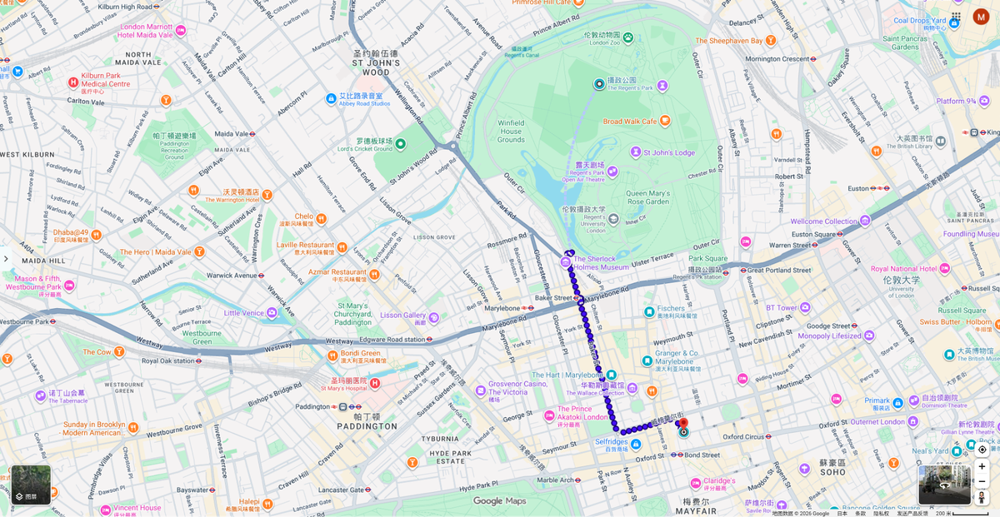
The BoTree酒店 → 摄政公园环线 BoTree → Regent's Park步行环线（Baker St corridor） · The BoTree → Regent's Park → 回 BoTree
©2026 Google · Google Maps
©2026 Google · Google Maps
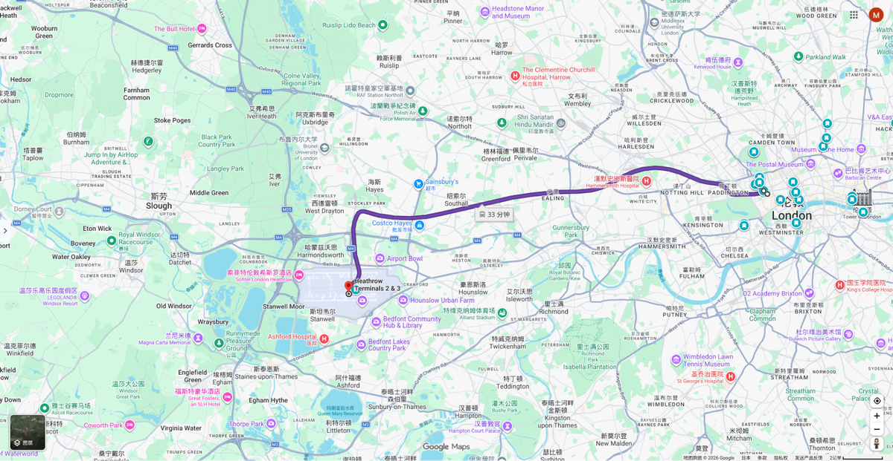
邦德街 → 希思罗T2（伊丽莎白线）Bond St → Heathrow T2, Elizabeth lineElizabeth line 约33分钟 · London → Heathrow Terminals 2 & 3（西行）
©2026 Google · Google Maps
©2026 Google · Google Maps
10:30
退房寄存行李
最后一天不把行李带去景点。
13:30马里波恩区午餐与最后采购用餐
Marylebone High Street 有独立精品店、书店、花店、咖啡馆，适合最后散步扫货；沿线就近午餐。
16:30回酒店取行李交通
检查护照、退税材料、充电设备。
17:30
前往希思罗 T2
推荐🚇 伊丽莎白线｜Elizabeth line 直达 T2£46.50 / 3人
展开交通详情：站名、方向、站数、费用与备选
- 1步行到 BoTree 步行约2分钟到 Bond Street Elizabeth line 站
- 2乘 邦德街站 Bond Street (Elizabeth line)
- 3Elizabeth line西行往Heathrow T2/3，约33分钟
- 4换乘：无（直达）
- 5出站步行：按指示牌到T2登机口
- 6总时长：45–55 分钟 door-to-gate
£15.50/人 · £46.50/3人（任意时段固定） 刷卡：各自同一张contactless，Bond St 进、Heathrow T2/3 出；大箱放车厢端部行李区
🚕 出租/网约车（点开）
- 车型行李 3人+3箱，App内查XL
- 上车点 BoTree正门
- 路况 高
仅实时整车≤£70 且 ETA≤10分钟 且 App 确认3人+3箱装得下（否则查XL）→ 网约车；若航班<90分钟，Elizabeth line 固定班次优于路面。
今日重点：西向动线不回头；机场以 Elizabeth line 为主选，为 22:05 航班留 3 小时。
📋 当天准备（展开）
当天补充与备选（票/时间/购物提醒）
门票/订位
- 摄政公园免费开放
交通票
- Bond Street 乘 Elizabeth line 往 T2&3 方向
- 17:30 出酒店、19:00 前到机场
支付/决策
- 先公园散步，再午餐，餐后取行李去机场
- 退房寄存后在 Marylebone Lane 沿线解决早餐；机厅长时间空调备一件薄外套
提醒
检查护照、退税材料、充电设备。
待办确认
只列真正需要你本人处理的
- 已购票 / 已预约（按时刻到场）
① Sky Garden 10/02 16:15，15:45 前到安检；② 大英博物馆 10/03 10:00 入场，09:30 前到正门；③ 剑桥去程国王十字车站 10:24、回程约 19:40；④ Eastbourne 去 09:46→11:51、回 19:33→21:05。
- 四家用户收藏餐厅
10/03：Rock & Sole 13:15午餐；Abuelo 15:15只作咖啡与共享无花果吐司，排队超过15分钟跳过；Bancone 17:30晚餐，建议自行订桌。10/05：ALBA建议订12:30工作日午餐，两道£32 / 三道£39，另确认开心果提拉米苏。
- Burberry Chatham Place 目标清单
10/01 下午顺路，提前记录想要品类。
- 国铁：Cambridge + Eastbourne 已购
出发前核电子票；D6 换乘站 View stops 现场确认。
- 七姐妹装备
防风防水外套、防滑鞋；10/05 晚再确认 10/06 沿海阵风。
出发清单
勾选保存在本机